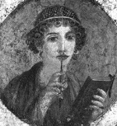

Lezbiyen kelimesinin isim annesi olan Midillili Sappho[2] (MÖ 630-570) bir Antik Yunan şairi ve öğretmendir. Kaleme aldığı aşk şiirlerinin pek azı günümüze gelmeyi başarmış olsa da, eski dünyada büyük bir popülerliği vardı. Kendinden sonraki Yunan ve Roma şiiri üzerinde büyük bir etkisi olmuştur.
Ünü ölümünden yüzyıllar sonra bile ayakta kalmayı başarmıştır. Öyle ki Platon (MÖ 429-347) onu Yunan mitolojisinin dokuz sanat ve edebiyat tanrıçası ile karşılaştırarak, Sappho’ya “onuncu esin perisi” lakabını takmıştır. Bir başka hayranının belirttiğine göre “eflatun saçlıdır, gülüşü saf ve tatlıdır.”

Yakın zamanlarda lirik şiirlerinden bazı yeni parçalar keşfedilmiştir. Böylece Sappho’nun Batı tarihinde homoseksüellik üzerine yazan ilk yazarlardan biri olduğu anlaşılmıştır. Çalışmaları yakın zamanlarda farklı dillere çevrilmiş, hakkında çeşitli romanlar yazılmış, doğum yeri olan Midilli Adası kısa zamanda lezbiyen turistler için bir çekim merkezi haline gelmiştir.
Sappho ömrünün büyük bölümünü Ege Denizi’nde bir ada olan Midilli’de geçirmiştir. Diğer taraftan bazı tarihi kanıtlara göre kısa bir süreliğine de olsa Sicilya’ya sürgüne gönderilmiştir. Muhtemelen Midilli Adası’nın önde gelenleri arasında yer alıyordu. En azından iki erkek kardeşi vardı. Cleis adında bir kız çocuk dünyaya getirdiğini söyleyenler de vardır.
Aşk, erotizm, kıskançlık ve hasretle dolu olan Sappho’nun şiirleri genellikle kadınlara hitaben yazılmıştır. Pek azında erkeklere seslenilmektedir. Şiirlerinden birinde arzuladığı bir kadını bir erkeğin yanında gördüğünde nasıl kıskandığını anlatmaktadır: “...soğuk terler döktüm, bir titreme aldı beni, rengim çimlerden bile daha yeşildi...”
Ölümünden sonra Sappho’nun şiirleri dokuz kitap halinde toplandı. Ovid (MÖ 43- MS 17), Catullus (MÖ 84-54) ve diğer klasik ozanlar tarafından dillendirilen şiirlerinin büyük bölümü Orta Çağ’da yok edilerek diğer pek çok Antik Yunan klasiğiyle aynı kaderi paylaştı. Sadece “Afrodit İlahisi” isimli şiiri eksiksiz bir biçimde günümüze kadar ulaşabilmiştir.
Ek Bilgiler
1- Oxford İngilizce Sözlüğü’ne göre lezbiyen kelimesi 19. yy’dan itibaren homoseksüel kadınlar için kullanılmaya başlanmıştır. Gay kelimesinin homoseksüel erkekler için kullanılmasının da benzer bir biçimde 19. yy’da gerçekleştiği düşünülmektedir.
2- Sappho’nun şiirlerinden geriye ince papirüs parçalarına yazılmış toplam bin satır kalmıştır.
3- 2008 yılında üç Midilli sakini bir Yunan mahkemesinde dava açtı. Talepleri gay ve lezbiyenlerin, lezbiyen kelimesini kullanmalarının engellenmesiydi. Söylediklerine göre bu kullanım haksız bir şekilde adada yaşayanların adını kötüye çıkarıyordu. Dava reddedildi.